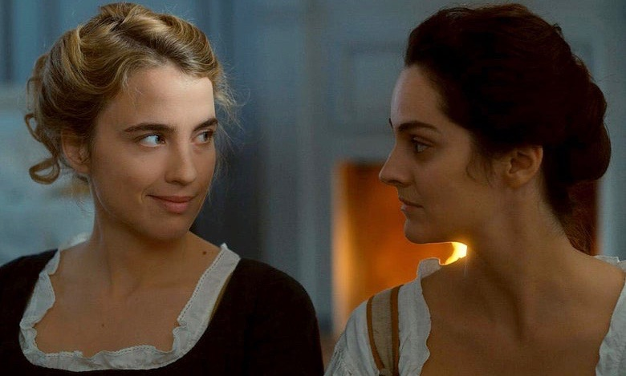
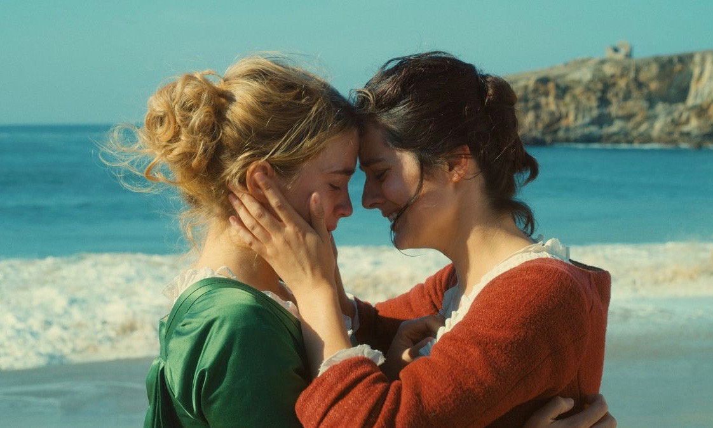
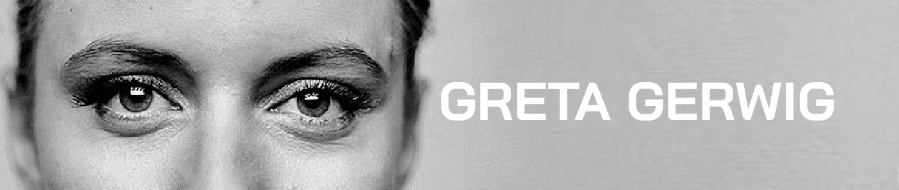
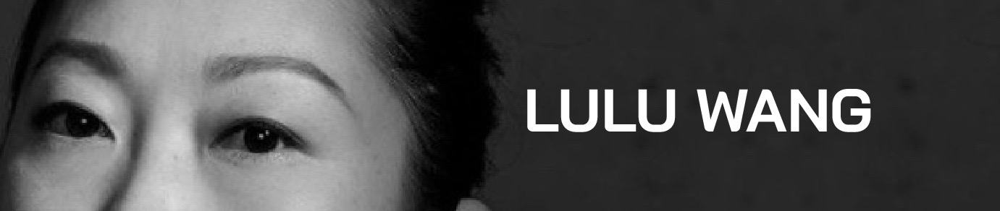
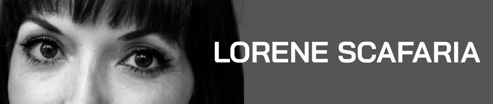
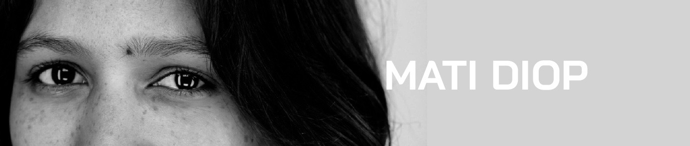

In the film “Portrait of a Lady on Fire,” set in 18th-century France, a glance, a stare is everything. The artist Marianne (Noémie Merlant) is commissioned to paint the noblewoman Héloïse (Adèle Haenel) so that the man Héloïse’s mother has arranged for her to marry can approve or disapprove of her before the wedding. Héloïse — opposed to the impending nuptials — has refused to sit for portraits before, and at first Marianne must do her job surreptitiously, studying her subject carefully during outings under the guise of having been hired as her companion.
This initial deception is conveyed through the intent, searching looks Marianne casts toward Héloïse and the curious, wary glances Héloïse returns to her — exchanges that reveal a mutual attraction and cement a powerful bond over time.
Adèle Haenel as Héloïse and Noemie Merlant as Marianne in "Portrait of a Lady on Fire." (Lilies Films/Neon).
To paraphrase Sonic Youth’s co-founder Kim Gordon, in her memoir “Girl in a Band”: To be a woman is to observe others observing you. Likewise, to flirt as a queer person is to immerse one’s self in the act of looking and being looked at, sometimes in secret. For many of us, that gaze at someone or some image is how we first realized our sexuality.
“Portrait of a Lady on Fire” was written and directed by Céline Sciamma and captures the essence of queer women’s desire in a way many other movies have tried and failed. Such depictions can walk a fine line between representation and exploitation, and when male directors are behind the camera, the results are typically more creepy than sexy, as seen in “Blue Is the Warmest Color” and “The Handmaiden.”
In those movies, the filmmakers leer at the actresses’ bodies; the joyless, naked spanking in “Blue” and the emphasis on bodily fluids in “The Handmaiden” make these scenes more like pornography than a show of intimacy and pleasure between the characters.
What these men are unable to capture is this: The woman who is being looked at must look back at the woman (or camera) looking at her for any real connection to take place. And the look she gives has to be one that communicates not only pleasure in being looked at, but pleasure in what she sees.
Ms. Sciamma’s film has an exceptionally refreshing vision of both emotional and physical intimacy (which is not necessarily explicit). And it reminded me of two other movies directed by women released in the United States this year that demonstrate thoughtful ways of looking at queer women: Madeleine Olnek’s “Wild Nights With Emily” and Wanuri Kahiu’s “Rafiki.”
Each filmmaker takes a unique approach in countering the male gaze. A scene in “Portrait of a Lady” shows Héloïse’s bare breasts alongside her raised arm, so we also see her unshaven armpit. Body hair on a woman is true to the period, but I can’t help thinking Ms. Sciamma also wanted to emphasize the difference from the countless clips (in porn and otherwise) featuring pretty, thin and conventionally feminine white women. Perhaps she wanted to throw a monkey wrench into male fantasies about female nudity onscreen — Claire Mathon’s cinematography renders the scene painterly, beautiful and yes, sexy. But it’s not the kind of sexiness we’re used to seeing onscreen.
In “Wild Nights With Emily,” a comedy examining Emily Dickinson’s decades-long relationship with her sister-in-law Susan Gilbert, we never see the two characters, played in older age by Molly Shannon and Susan Ziegler, naked. But we do frequently see them in bed together. The cinematographer Anna Stypko admires them in their vintage lingerie, and doesn’t shy away from the way Emily’s décolletage gently creases when she turns over in bed (a change in physiology many of us in our 50s have also noticed) or the lines on her and Susan’s faces.
The film has some elements of farce, but never makes the sexual desires of the 50-something women the punch line. The light in their eyes during stolen moments alone together, the ease with which they express joy and tenderness while touching — these elements make love between women who are long past their 20s seem not just possible, but also deeper and better than love at a younger age.
And the Kenyan film “Rafiki” captures the electric stares and ensuing relationship between a young couple, Kena (Samantha Mugatsia) and Ziki (Sheila Munyiva). Kena, a butch, short-haired woman, is transfixed by the playful, regal Ziki and her long, bright pink yarn locs, blue and pink manicure and the inviting roll of her shoulder as she practices dance moves with her friends. Ziki notices Kena’s stare and, as many femmes might do, makes the first move.
Ziki is stunning, but the camera doesn’t gawk. In the intimate scenes, we see an impressionistic mix of the two characters’ intertwined hands — a knee, a face, a kiss, with slightly out-of-sync audio recreating the disorienting but glorious feeling of first having sex with someone you really want, and who really wants you. We see the sex as the two partners — not an outside voyeur — might.
The couples in each of these films are forced by circumstance to engage in romance covertly, yet what comes through in the performances is the pleasure of being — truly — seen.
Adèle Haenel as Héloïse and Noemie Merlant as Marianne in "Portrait of a Lady on Fire." (Lilies Films/Neon)
Héloïse in “Portrait of a Lady on Fire” talks back, too. When Marianne remarks that Héloïse never smiled during their initial encounters, Héloïse flirtatiously pushes back: She had not smiled because Marianne had yet to say anything funny.
“Rafiki” concludes on an optimistic note, and the Kenya Film Classification Board banned the film because of its “clear intent to promote lesbianism in Kenya contrary to the law” — in May, the nation’s high court upheld laws criminalizing gay sex — though the ban was temporarily lifted last year so that it would be eligible for an Academy Award. Ms. Kahiu, the director, refused to put a damper on the film’s ending. There’s “such joy, kindness and softness in the relationship with the girls,” she said in an interview. “It was important to show that.”
Queer women who love films know they often don’t love us back — we’re used to having to ignore certain scenes about us in order to enjoy the rest of the movie. Around the time of its release, I gave “Blue Is the Warmest Color” a mostly positive review while acknowledging the exploitative nature of the intimacy scenes, as well as accusations of on-set abuse the lead actresses made against the director, Abdellatif Kechiche.
But this wave of “Portrait of a Lady on Fire,” “Rafiki” and “Wild Nights With Emily” makes me cautiously optimistic that queer women might see more films in the future where we can take everything in, and never once have to look away.



